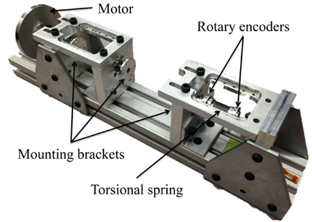
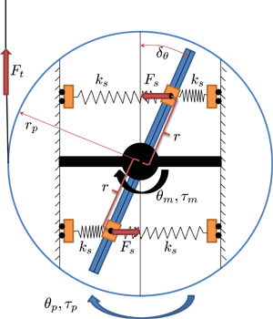
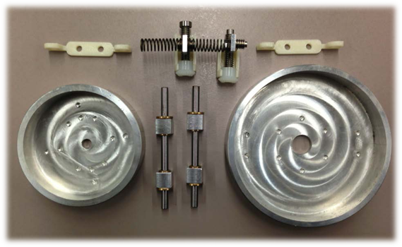

Variable Sti ffness Actuators (VSAs)
Introduction
As robotic devices are becoming more ubiquitous in the modern world, human-robot interaction is becoming a necessity. Human muscle’s natural sti ffness varies in di fferent task scenarios. This biological feature motivates the development of a compliant actuator with adjustable sti ness to ensure the safety and comfort of human users while maintaining performance. In other words, Variable Sti ffness Actuators (VSAs) and the corresponding intelligent control are desired to provide the flexibility by changing their compliance to suit the variable tasks given.
Experimental Setup
To perform this research, we have constructed a test rig capable of accurately measuring the position and torque of a VSA device. Using this setup we can test both the static and dynamic properties of such devices. The test device itself comprises of a set of standardized mounting brackets, to which high resolution optical indexing encoders are mounted. Motor control and data acquisition are performed using a real-time operating system.

Test rig for VSA position and torque measurements
A Proposed VSA Design
One of the designs we are currently investigating uses a variable length fulcrum to change the eff ective sti ness of two linear springs. By varying the positions of these two springs, the e ective rotational joint sti ness of the series elastic actuator can be changed continuously allowing for the dynamic properties to be tuned to suit the desired application.
|  |  |
Proposed VSA concept design
Control Strategy
We are currently investigating a hybrid system control strategy that ts the inherent characteristics of such devices and applications involving the sti ness changes. In a hybrid framework, the dynamics of each mode will be characterized for each task segmentation and a set of di erent controllers will be synthesized to provide optimal performance. By varying actuator sti ness, the system dynamics can be altered at a mechanical level, requiring the hybrid feedforward/feedback controllers with adaptation capabilities to be properly realized and switched for each segment.
Potential Applications
By varying the sti ffness of an actuator, we are able to protect both the actuator and interfacing devices by allowing for exibility in their movements. This can be of use in human assistive devices where it is important to not apply impulse loads to the user. These devices can also be used to tune the resonance of a device which stores /dissipates energy.
Researchers
| Robert Matthew | Graduate Student | Homepage | |
| Changliu Liu | Graduate Student | ||
| Recent graduates: | |||
| Wenjie Chen | FANUC Corporation | Homepage |